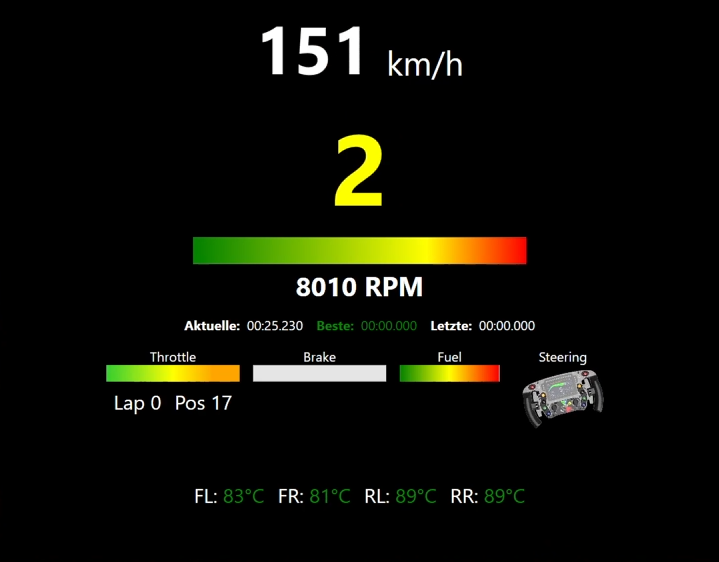

SimRaceTelemetry ist eine WPF-Anwendung in C#/.NET, die
Telemetrie-Daten aus Forza Motorsport in Echtzeit ausliest und als übersichtliches
Dashboard darstellt. Die App ist als "digitaler Tacho" für ein SimRacing-Setup gedacht und visualisiert
die wichtigsten Fahrdaten so, dass sie während der Fahrt schnell erfassbar sind.
Features / Anzeigen
Tech-Stack
Was das Projekt zeigt
Mögliche Erweiterungen
Video & Bilder des Projekts
Mit SimRaceTelemetry habe ich ein Telemetrie-Tool entwickelt, das Live-Fahrdaten direkt aus einem
SimRacing-Titel empfängt und als Overlay visualisiert. Im Fokus stehen klare, schnell erfassbare Anzeigen
wie Speed/Gang/Drehzahl, Throttle/Brake, Steering sowie Rundenzeiten und Reifentemperaturen
(FL/FR/RL/RR). Ziel war ein performantes, "stream-taugliches" UI, das auch bei hoher Update-Rate stabil läuft. Das Projekt zeigt meine Arbeitsweisean Realtime-Datenverarbeitung, Datenvisualisierung
und einer sauberen UI-Struktur.
